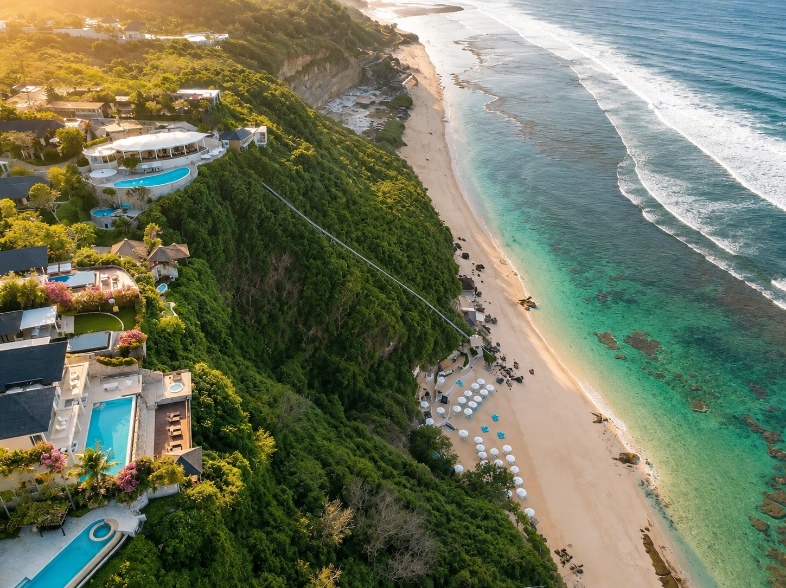

03 / REST
Спальни
Четыре спальни
Во всех спальнях есть кондиционеры. Три двуспальные кровати и две односпальные, три ванные комнаты и гостевой туалет.

VILLA INDAH
Indah находится в зелёной части Унгасана, на территории Karma Kandara. Вилла целиком в вашем распоряжении: четыре спальни для восьми гостей, гостиная и террасы у собственного бассейна.
Место для вашей фотографии
Как могут пройти ваши дни здесь
Проснуться среди зелени, выйти на террасу с чашкой кофе и искупаться до завтрака. День можно провести у своего бассейна или спуститься к океану. Вечером — собраться за ужином на вилле.
Посмотреть комнаты
Место для вашей фотографии
НА ВИЛЛЕ
Спальни для уединения, гостиная и террасы для встреч.
Во всех спальнях есть кондиционеры. Три двуспальные кровати и две односпальные, три ванные комнаты и гостевой туалет.

Гостиная объединена с обеденной зоной и оборудованной кухней. Двери ведут на террасу к бассейну.
KARMA KANDARA
Вилла находится на территории Karma Kandara. Вы можете пользоваться общими зонами отеля; часть услуг оплачивается отдельно.
Только для вашей компании
Спальни, гостиная, кухня, террасы и собственный бассейн.
Общие объекты на территории отеля
Вход для гостей виллы включён. Аренда лежаков оплачивается отдельно.

01 / OCEANК пляжу отеля можно спуститься на лифте. Лежаки доступны за дополнительную плату.
 02 / TASTE
02 / TASTEРестораны и бары на территории Karma Kandara. Еда и напитки оплачиваются отдельно.
 03 / UNDER THE STARS
03 / UNDER THE STARSОтель устраивает бесплатные кинопоказы на пляже. Расписание можно узнать на месте.
Спа, массаж и другие дополнительные услуги оплачиваются по условиям отеля.
Галерея
Расположение
На юге Бали, на полуострове Букит.
Вилла расположена на территории отеля Karma Kandara.
FAQ
До восьми гостей: три двуспальные и две односпальные кровати в четырёх спальнях. На вилле три ванные комнаты и отдельный гостевой туалет.
Бассейн виллы предназначен для вашей компании. Бассейн отеля и пляж — общие; доступ включён. Лежаки оплачиваются отдельно отелю.
Еда и напитки оплачиваются отдельно. Кинопоказы на пляже бесплатные; расписание уточняйте в отеле.
PRIVATE VILLA INDAH
Сообщите даты и состав компании. Мы уточним доступность виллы и условия проживания.
Карта
Точную метку виллы добавим после подтверждения местоположения.